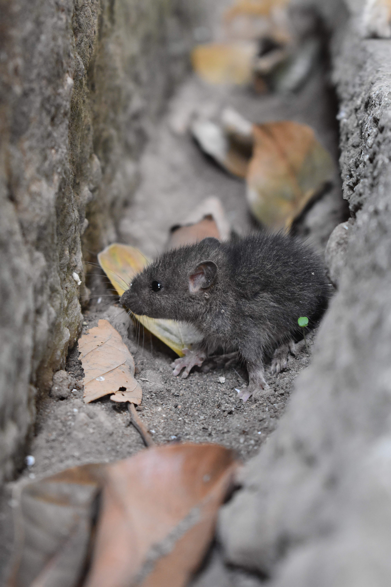
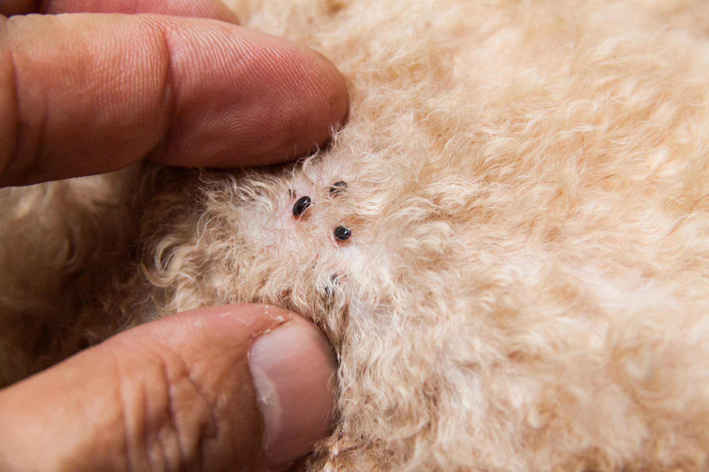
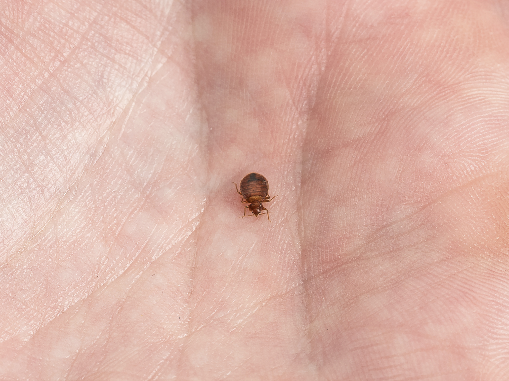
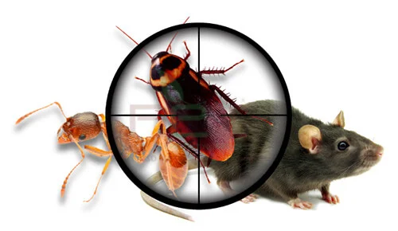
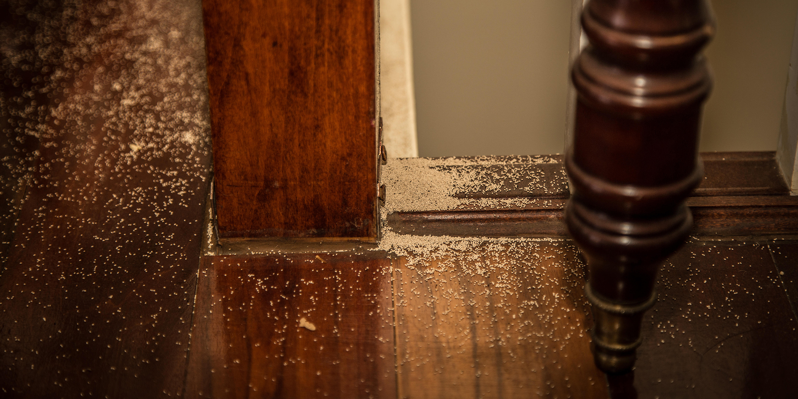
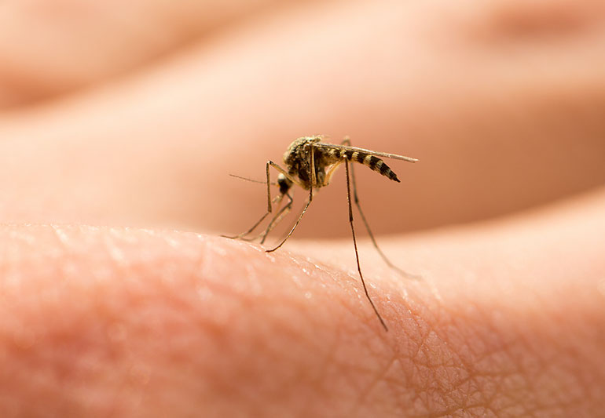
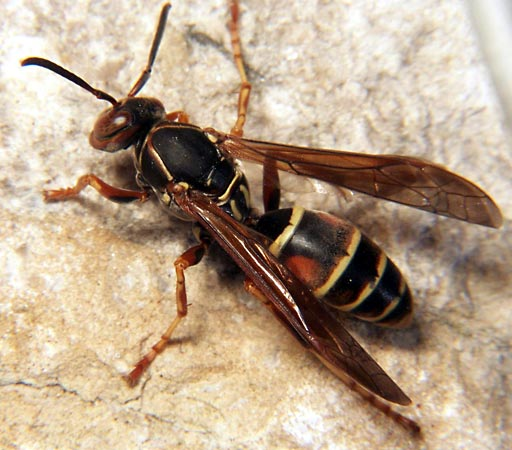

Mice

Mouse (plural: mice) is a small rodent characteristically having a
pointed snout, small rounded ears, a body-length scaly tail and a high
breeding rate. The best known mouse species is the common house mouse
(Mus musculus). It is also a popular pet. In some places, certain
kinds of field mice are locally common. They are known to invade homes
for food and shelter.Mice, in certain contexts, can be considered
vermin which are a major source of crop damage, causing structural
damage and spreading diseases through their parasites and feces. In
North America, breathing dust that has come in contact with mouse
excrement has been linked to hantavirus, which may lead to hantavirus
pulmonary syndrome (HPS). Primarily nocturnal animals, mice compensate
for their poor eyesight with a keen sense of hearing, and rely
especially on their sense of smell to locate food and avoid predators.
Mice build intricate burrows in the wild. These burrows typically have
long entrances and are equipped with escape tunnels or routes. In at
least one species, the architectural design of a burrow is a genetic
trait.
Our affordable Rodent control services are unmatched, we can help
you get rid of rodents efficiently, by using advanced in house
technology
Fleas

Fleas are small flightless insects that form the order Siphonaptera.
As external parasites of mammals and birds, they live by consuming the
blood of their hosts. Adults are up to about 3 mm (0.12 in) long and
usually brown. Bodies flattened sideways enable them to move through
their host’s fur or feathers; strong claws prevent them from being
dislodged. They lack wings, and have mouthparts adapted for piercing
skin and sucking blood and hind legs adapted for jumping. The latter
enable them to leap a distance of some 50 times their body length, a
feat second only to jumps made by froghoppers. Larvae are worm-like
with no limbs; they have chewing mouthparts and feed on organic
debris. Over 2,500 species of fleas have been described worldwide. The
Siphonaptera are most closely related to the snow scorpionflies
(Boreidae), placing them within the endopterygote insect order
Mecoptera. Fleas arose in the early Cretaceous, most likely as
ectoparasites of mammals and marsupials, before moving on to other
groups including birds. Each species of flea is more or less a
specialist on its host animal species: many species never breed on any
other host, though some are less selective. Some families of fleas are
exclusive to a single host group: for example, the Malacopsyllidae are
found only on armadillos, the Ischnopsyllidae only on bats, and the
Chimaeropsyllidae only on elephant shrews. The oriental rat flea,
Xenopsylla cheopis, is a vector of Yersinia pestis, the bacterium
which causes bubonic plague. The disease was spread by rodents such as
the black rat, which were bitten by fleas that then infected humans.
Major outbreaks included the Plague of Justinian and the Black Death,
both of which killed a sizeable fraction of the world’s population.
Your complete premises is sprayed for disinfestation using quality
approved material thereby protecting valuable lives
Bed Bugs

Bed bugs are parasitic insects of the cimicid family that feed
exclusively on blood. Cimex lectularius, the common bed bug, is the
best known as it prefers to feed on human blood.The name bed bug
derives from the preferred habitat of Cimex lectularius: warm houses
and especially near or inside beds and bedding or other sleep areas.
Bed bugs are mainly active at night, but are not exclusively
nocturnal. They usually feed on their hosts without being noticed. A
number of adverse health effects may result from bed bug bites,
including skin rashes, psychological effects, and allergic symptoms.
Bed bugs are not known to transmit any pathogens as disease vectors.
Certain signs and symptoms suggest the presence of bed bugs; finding
the adult insects confirms the diagnosis. Bed bugs have been known as
human parasites for thousands of years. At a point in the early 1940s,
they were mostly eradicated in the developed world, but have increased
in prevalence since 1995, likely due to pesticide resistance,
governmental bans on effective pesticides, and international
travel.Because infestation of human habitats has begun to increase,
bed bug bites and related conditions have been on the rise as well.
Bed bug treatment comprises of treating the all places where the bed
bugs may be hiding. On beds, Mattresses (mattress buttons) as well
as the folds at the edges, Cracks and crevices in walls, bed frames,
wall hangings, picture frames, night lamp stands, stuffed furniture,
base boards, behind loose wall papers, light switches, door and
window frames, conduits etc.
Cockroaches

Most species of cockroach are about the size of a thumbnail, but
several species are bigger. The world’s heaviest cockroach is the
Australian giant burrowing cockroach Macropanesthia rhinoceros, which
can reach 9 cm (3.5 in) in length and weigh more than 30 g (1.1 oz).
Comparable in size is the Central American giant cockroach Blaberus
giganteus, which grows to a similar length. The longest cockroach
species is Megaloblatta longipennis, which can reach 97 mm (3.8 in) in
length and 45 mm (1.8 in) across.[19] A Central and South American
species, Megaloblatta blaberoides, has the largest wingspan of up to
185 mm (7.3 in). The body is divided into a thorax of three segments
and a ten-segmented abdomen. The external surface has a tough
exoskeleton which contains calcium carbonate and protects the inner
organs and provides attachment to muscles. It is coated with wax to
repel water. The wings are attached to the second and third thoracic
segments. The tegmina, or first pair of wings, are tough and
protective, lying as a shield on top of the membranous hind wings,
which are used in flight. All four wings have branching longitudinal
veins, and multiple cross-veins. The three pairs of legs are sturdy,
with large coxae and five claws each.They are attached to each of the
three thoracic segments. The front legs are the shortest and the hind
legs the longest, providing the main propulsive power when the insect
runs. The spines on the legs were earlier considered to be sensory,
but observations of the insect’s gait on sand and wire meshes have
demonstrated that they help in locomotion on difficult terrain. The
structures have been used as inspiration for robotic legs. The abdomen
has ten segments, each with a pair of spiracles for respiration.
Segment ten bears a pair of cerci, a pair of anal styles, the anus and
the external genitalia. Males have an aedeagus through which they
secrete sperm during copulation and females have spermathecae for
storing sperm and an ovipositor through which the ootheca is laid.
Cockroach problem is very often the most common problem in every
household. We provide very effective solution and relief from
cockroach menace i.e. Herbal treatment (without smelly pesticides)
for Cockroaches.
Termite

Owing to their wood-eating habits, many termite species can do great
damage to unprotected buildings and other wooden structures. Their
habit of remaining concealed often results in their presence being
undetected until the timbers are severely damaged, leaving a thin
layer of a wall that protects them from the environment. Of the 3,106
species known, only 183 species cause damage; 83 species cause
significant damage to wooden structures. In North America, nine
subterranean species are pests; in Australia, 16 species have an
economic impact; in the Indian subcontinent 26 species are considered
pests, and in tropical Africa, 24. In Central America and the West
Indies, there are 17 pest species. Among the termite genera,
Coptotermes has the highest number of pest species of any genus, with
28 species known to cause damage. Less than 10% of drywood termites
are pests, but they infect wooden structures and furniture in
tropical, subtropical and other regions. Dampwood termites only attack
lumber material exposed to rainfall or soil. Drywood termites thrive
in warm climates, and human activities can enable them to invade homes
since they can be transported through contaminated goods, containers
and ships. Colonies of termites have been seen thriving in warm
buildings located in cold regions. Some termites are considered
invasive species. Cryptotermes brevis, the most widely introduced
invasive termite species in the world, has been introduced to all the
islands in the West Indies and to Australia. In addition to causing
damage to buildings, termites can also damage food crops. Termites may
attack trees whose resistance to damage is low but generally ignore
fast-growing plants. Most attacks occur at harvest time; crops and
trees are attacked during the dry season.
One should carry out timely inspection of termites as they thrive
and prosper on our living spaces. We utilise the modern scientific
method of treatment for Anti Termite (White Ants) treatment with
powerful pesticides, termite chemicals are filled regularly in the
exteriors area till the whole walls are soaked absorbed with the
chemicals, that is why we do the only one major treatment of the
white ants at the root and we are only company who is utilizing
Seepage canes which is permanent solution (this method used only our
company in the whole Mumbai) of the white ants, we give 1/3/5 years
of guarantee.
Mosquito

Clean water breeder. Over head tanks, Ponds, Banks of rivers, rain
water collections, cement tanks, wells, Rice fields etc. There are
nearly 50 species of Anophelines in India & out of that 9 species are
transmitting Malaria. In urban areas like Mumbai, Chennai, Delhi etc
it is only one species i.e. Anopheline stephensi that is transmitting
Malaria in urban areas. In metros, it breeds mostly in overhead tanks
of drinking water in our buildings. 90% breeding takes place in that &
the rest in rainwater collections, cement tanks & in clean water wells
within the urban areas. This mosquito transmits Malaria & it is an
efficient Vector. Overhead tanks are to be taken care by hermetical
sealing. Mostly taken care by the owners of houses & strict
implementation by Corporation officials by enforcing through legal
measures. Other method is environmental management i.e. by way of
clearing the water accumulation either by way of filling or emptying
it. We recommend Bti, Fenthion & Tempos as larvicide’s. Bti & Fenthion
in polluted water & Bti & Tempos in clean water. Larval Control:-
Weekly application of larvicide’s or Bio-larvicide’s. Tempos, Fenthion
for clean & polluted water respectively. Bti as biolarvicide. Double
dose for polluted water bodies. Another method is by release of Guppy
or Gambusia fishes. Larval Control:- Weekly application of larvicide’s
or Bio-larvicide’s. Tempos, Fenthion for clean & polluted water
respectively. Bti as biolarvicide. Double dose for polluted water
bodies. Another method is by release of Guppy or Gambusia fishes.
Space Spray:- This is otherwise known as Fogging. There are two
products used in this. Pyrethrum 2% extract & also Malathion
Technical. Mostly the earlier one is used because of its natural
origin & effectiveness. This is done during epidemics time in order to
reduce the transmission. Pyrethrum extract is recommended. “Cold
Fogging’’ to be done preferably at Dusk time transferred.
Wasps

A wasp is any insect of the order Hymenoptera and suborder Apocrita
that is neither a bee nor an ant. The Apocrita have a common
evolutionary ancestor and form a clade; wasps as a group do not form a
clade, but are paraphyletic with respect to bees and ants. The most
commonly known wasps, such as yellow jackets and hornets, are in the
family Vespidae and are eusocial, living together in a nest with an
egg-laying queen and non-reproducing workers. Eusociality is favoured
by the unusual haplodiploid system of sex determination in
Hymenoptera, as it makes sisters exceptionally closely related to each
other. However, the majority of wasp species are solitary, with each
adult female living and breeding independently. Many of the solitary
wasps are parasitoidal, meaning that they raise their young by laying
eggs on or in other insects (any life stage from egg to adult). Unlike
true parasites, the wasp larvae eventually kill their hosts. Solitary
wasps parasitize almost every pest insect, making wasps valuable in
horticulture for biological pest control of species such as whitefly
in tomatoes and other crops. Wasps first appeared in the fossil record
in the Jurassic, and diversified into many surviving superfamilies by
the Cretaceous. They are a successful and diverse group of insects
with tens of thousands of described species; wasps have spread to all
parts of the world except for the polar regions. The largest social
wasp is the Asian giant hornet, at up to 5 centimetres (2.0 in) in
length; among the largest solitary wasps is a group of species known
as tarantula hawks, along with the giant scoliid of Indonesia
(Megascolia procer). The smallest wasps are solitary chalcid wasps in
the family Mymaridae, including the world’s smallest known insect,
with a body length of only 0.139 mm (0.0055 in), and the smallest
known flying insect, only 0.15 mm (0.0059 in) long. Social wasps are
considered pests when they become excessively common, or nest close to
buildings. People are most often stung in late summer, when wasp
colonies stop breeding new workers; the existing workers search for
sugary foods and are more likely to come into contact with humans; if
people then respond aggressively, the wasps sting. Wasp nests made in
or near houses, such as in roof spaces, can present a danger as the
wasps may sting if people come close to them. Stings are usually
painful rather than dangerous, but in rare cases people may suffer
life-threatening anaphylactic shock.